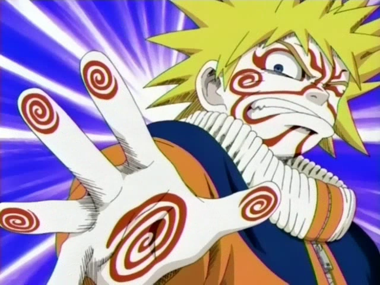

Naruto Uzumaki

Summary
Seeking a challenging and exciting role in the ninja world where i can use my extraordinary abilities, unshakable determination, and love of ramen to bring about peace, protect my friends, and become the Hokage of the Hidden Leaf Village.
Education
- Ninja Academy, Konohagakure
- Graduated: Belive it!
- Classes: Ninjutsu,Genjutsu,Taijutsu,SexyJutsu and Ramenology.
Work Experience
Genin(Team 7 Member)
- Sensei: Kakashi Sensei
- Hidden Leaf Village
- Responsibilities: Completing D-rank missions, learning new jutsu, and chasing Sasuke.
Chunin Exams Finalist
- Proved my strength and determination by reaching the finals.
- Honorary Mention: "Most Creative Use of Shadow Clones."
Defeated Akatsuki and Kaguya
- Played a key role in saving the world from major threats.
- Skills: Rasengan, Sage Mode, and the power of friendship.
Hokage's Assistant
- Assisted the Sixth Hokage, Kakashi Hatake.
- Responsibilities: Paperwork, ramen runs, and pranking Kakashi-sensei.
Skills
- Shadow Clone Jutsu : Can create countless clones to multitask like a ninja boss.
- Rasengan Master: Highly skilled in creating and using Rasengan for combat and pranks.
- Talk-no-Jutsu: Expert at changing minds and making friends, even with the toughest of enemies.
- Endless Determination: Unwavering commitment to goals and dreams.
- Ramen Connoisseur: Know every ramen shop in the Hidden Leaf Village and their specialty.
Acheivements
- Mastered the Rasengan, even created the Big Ball Rasengan and the Rasen-Shuriken.
- Successfully brought Sasuke Uchiha back to the village (eventually).
- Hosted the most epic ramen-eating competition in Hidden Leaf history.
- Earned the nickname "The Orange Hokage" from the villagers.
Others
- Interests
- Contact Info